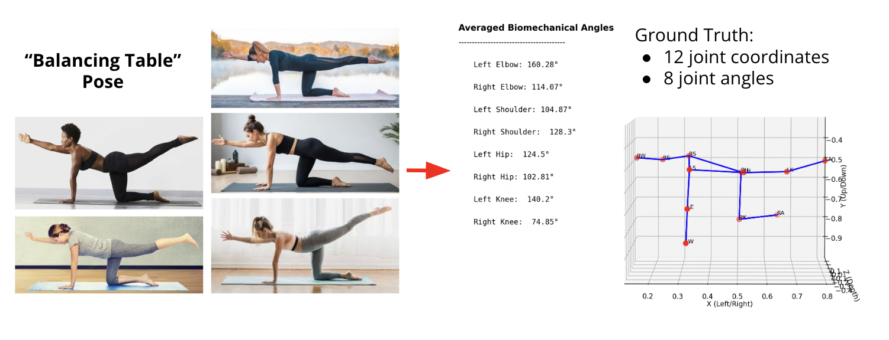
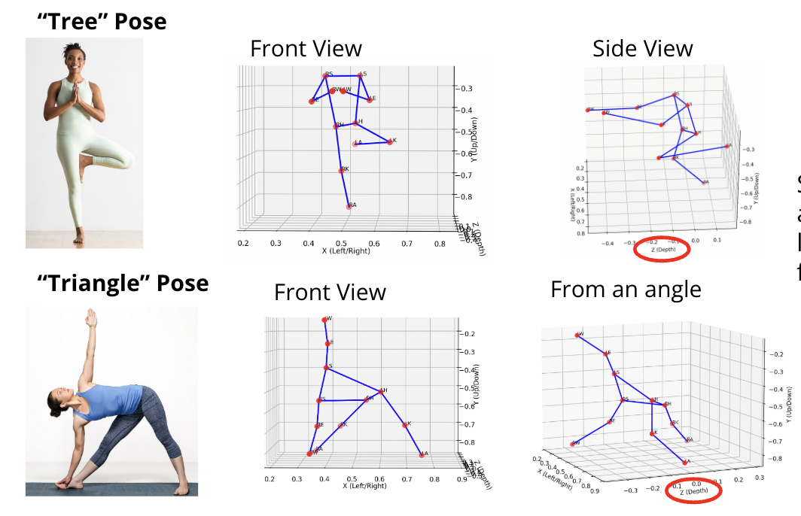
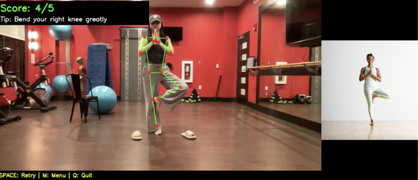

Kinematic Posture Alignment
CMU 24-703 Numerical Methods ProjectReal-Time Yoga Form Evaluation & Digital Coaching via Jacobi SVD
Project Overview
Developed at Carnegie Mellon University for Numerical Methods (24-703), this tool evaluates human biomechanics in real-time using standard webcam feeds. By extracting key joint landmarks with Google MediaPipe, the system solves the rigid body alignment problem via a custom-built Jacobi Singular Value Decomposition (SVD) pipeline.
- Optimal rigid rotation mapping user coordinates onto ground-truth instructor poses.
- Hybrid 2D/3D coordinate switching to eliminate single-lens longitudinal Z-depth ambiguity.
- Real-time digital coaching with targeted angular feedback (e.g., "Extend left shoulder moderately").
Standard webcam video feed combined with real-time Google MediaPipe keypoint detection to capture 33 skeletal landmarks continuously.
Mathematical Formulation & SVD Pipeline
Translating skeletal joint coordinates into scale-invariant matrix spaces for rigid alignment.
Centralization & Normalization
To isolate pure anatomical pose variation from camera distance and body size differences, both user and instructor coordinate matrices \(M\) are mean-centered and scaled via the Frobenius norm:
This guarantees that both user and instructor matrices have a Frobenius norm of exactly 1.0, enabling invariant cross-covariance calculation.
Custom Jacobi SVD vs NumPy
A custom iterative Jacobi SVD solver was engineered to calculate cross-covariance \(C = A^T B\) and solve for optimal rotation \(R = U \cdot V^T\).
C = user_matrix.T @ gt_matrix
U, sigma, Vt = jacobi_svd(C)
R = U @ Vt # Validated to 4 decimal places vs NumPy
Operating on small \(2 \times 2\) or \(3 \times 3\) covariance matrices yields a constant computational runtime of \(\mathcal{O}(1)\) per frame.
Ground Truth & Hybrid 2D/3D Depth Resolution
Mitigating single-camera depth distortion by adapting dimension spaces based on pose orientation.

3D Side-Facing Model
Poses like Cobra, Downward Dog, and Balancing Table utilize full 3D coordinate space to accurately capture longitudinal joint displacements along the Z-axis.

2D Front-Facing Resolution
Flattening front-facing poses (e.g., Tree, Triangle) to 2D matrices eliminates unreliable longitudinal Z-depth noise caused by single-lens webcam limitations.
Real-Time Evaluation & Digital Coach Results
Live validation testing featuring real-time MediaPipe joint tracking, SVD alignment scoring, and corrective feedback.

Downward-Facing Dog Pose
Score: 4/5Evaluated using 3D SVD alignment space. Targeted tip generated: "Extend your right shoulder slightly".

Tree Pose
Score: 4/5Evaluated using 2D hybrid depth space. Targeted tip generated: "Bend your right knee greatly".
Calculates 8 biomechanical joint angles via vector dot products, isolating the single joint exhibiting the largest angular deviation.
Maps error magnitudes to severity qualifiers: Slightly (<30°), Moderately (30–45°), and Greatly (>45°).
Requires a stationary hold threshold over a 5-second dwell time before calculating final score and frame capture.
Limitations & Future Scope
Identifying system boundary conditions and potential engineering iterations.
Current Limitations
- Single-Camera Depth Ambiguity: Monocular Z-axis estimation in MediaPipe can introduce minor noise during deep 3D torsos twisting.
- Occlusion Sensitivity: Self-occluded limbs (e.g., overlapping arms during tight twists) can briefly drop landmark tracking confidence.
- Static Ground Truth: Relies on pre-recorded reference pose vectors rather than dynamic multi-angle instructor templates.
Future Roadmap
- Stereo / Multi-View Fusion: Integrate dual-camera inputs or depth-sensing (RGB-D) hardware to eliminate 2D/3D mode toggling.
- Dynamic Tempo Tracking: Expand from static pose holding to continuous flow sequence alignment using Dynamic Time Warping (DTW).
- Adaptive Tolerance Scaling: Adjust angular scoring thresholds dynamically based on user flexibility levels and skill tiers.